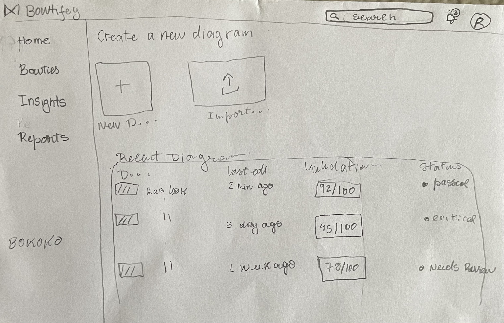
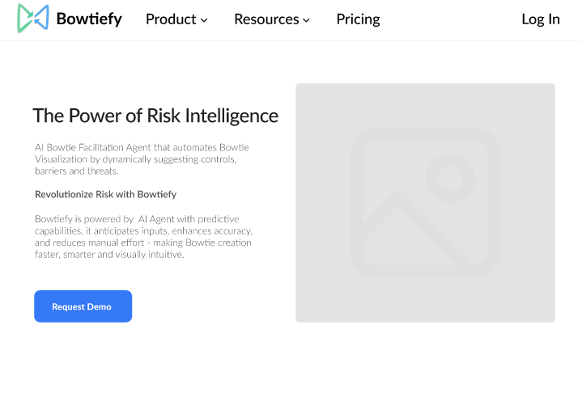

UX/UI DESIGN PROJECT
BOWTIEFY
AI-POWERED RISK MANAGEMENT PLATFORM
Redesigned an AI-powered risk management platform to improve explainability, usability, and user trust through Human-Centered AI design principles.
Project Objective
This research project focused on improving the explainability and usability of AI-generated insights within the Bowtiefy platform. The goal was to understand how users interpret AI recommendations, identify opportunities to increase transparency, and design solutions that help users better understand the reasoning behind AI outputs.
Our Mission
Our mission was to explore how AI systems can become more understandable, trustworthy, and user-centered. By researching user expectations and challenges with AI explanations, we aimed to design experiences that bridge the gap between complex AI processes and human decision-making.
Main Question
How can we design AI explanations that help users understand, trust, and effectively interact with AI-generated insights?
The Problem
Although AI can provide powerful insights, users often struggle to understand how AI reaches its conclusions. A lack of transparency can create uncertainty, reduce trust, and make it difficult for users to confidently act on AI recommendations.
The Solution
Design a transparent and user-centered AI experience by introducing clearer explanations, improved visual communication, and interactive features that allow users to understand the reasoning behind AI-generated insights.
Design Process
Milestone 1: The Research
Research Exploration
During the first phase of the project, the team focused on understanding the
current Bowtiefy experience and identifying opportunities to improve AI
transparency and user understanding.
Research focused on:
• AI explainability principles
• Human-AI interaction patterns
• User challenges with AI-generated insights
• Improving trust and decision-making
The research phase established the foundation for creating a more intuitive
and human-centered AI experience.
Design Recommendations
Based on research findings, we identified opportunities to make AI-generated
insights easier to interpret and more actionable.
Key recommendations included:
• Providing clearer explanations behind AI decisions
• Using visual communication to simplify complex information
• Allowing users to explore factors influencing AI recommendations
• Increasing transparency to build user confidence
Initial Concepts & Exploration

Key Features
Milestone 2: Designing Explainable AI Experiences
Console
Serving as the central workspace where users begin their analysis, manage projects, and access Bowtiefy's core tools.
AI Explanation Layer
Provides users with clearer reasoning behind AI-generated results, helping them understand how recommendations are created.
Insights
Presenting important patterns and findings in an easy-to-understand format.
Reports
Allowing users to organize, summarize, and share their analysis.
Industry Benchmarks
Helping users compare their results against relevant standards and best practices.
Structural Validation
Ensuring analyses are complete, consistent, and aligned with established methodologies.
High-Fidelity Flow & Prototyping

Coming This Fall: Phase 2
The next phase of Bowtify will focus on further developing and validating
the redesigned AI experience.
Future work will include refining the high-fidelity prototype, exploring
additional Human-AI interaction patterns, and evaluating how users interpret
AI-generated recommendations.
Through continued research and usability testing, Phase 2 aims to strengthen
transparency, trust, and confidence when interacting with AI-powered risk
management systems.
The goal is to continue designing AI experiences where users understand not
only the outcome, but also the reasoning behind AI decisions.
Projects
View All →
Clarity
AI-powered financial education app that helps teenagers build healthy budgeting and spending habits.
View Project →
Space Blog
A React-based blog application honoring NASA's Artemis II astronauts. Built collaboratively to create a responsive experience while strengthening skills in React, authentication, and modern front-end development.
View Project →